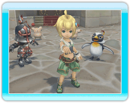
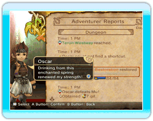

● I want to stay out longer, but Chime makes me go to bed at sundown!
 If you boost morale high enough, and families become happy, they will place lights on their porches, allowing you to stay out late at night.
If you boost morale high enough, and families become happy, they will place lights on their porches, allowing you to stay out late at night.
● What are special sales?
Shops have special sales days when their sales reach a certain level. Shops are known to sell rare items during these special sales days. The affected shops can be spotted by the garish decorations lighting up their entrance.
● What are holidays?
Holidays allow adventurers to take a break from exploring dangerous dungeons. Adventurers who were exhausted can stay home and rest, resulting in more efficient exploration starting the next day. The king also changes into his holiday clothing, and the citizens' reactions will change accordingly.

Note that no other behests can be posted during holidays.
● I want to build more structures, but I never have enough elementite.
Make sure to include a thief with the Keen Eyes ability in an adventuring party. This ability will dramatically increase the amount of elementite found in dungeons. Remember, you must first build a gaming hall to change an adventurer's job to thief.
● I need more gil!
Your income is directly proportionate to the number of citizens in the kingdom, and spacious houses recall more citizens than small houses. Happy families are also more willing to give larger tithes to the king.
● How can you increase the number of adventurers?
Develop the kingdom and you will gain access to guild halls. Giving funds to a guild hall will allow you to raise the number of adventurers you can sanction.
● This dungeon is impossible to clear!
Make sure to read the adventurer reports carefully. There may be hints to clearing dungeons hidden in them.

If a dungeon boss is giving adventurers trouble, you may consider raising the exploration rate of the dungeon. Shortcuts and fountains of restoration in the dungeon will allow your adventurers to face the boss with better odds.